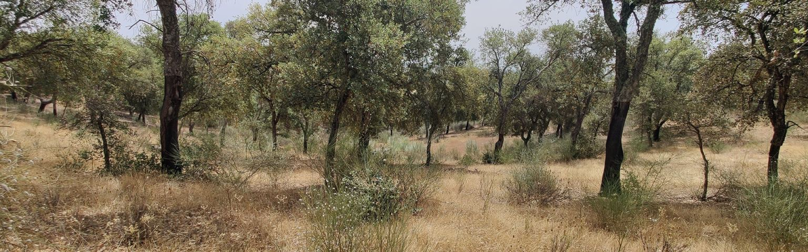
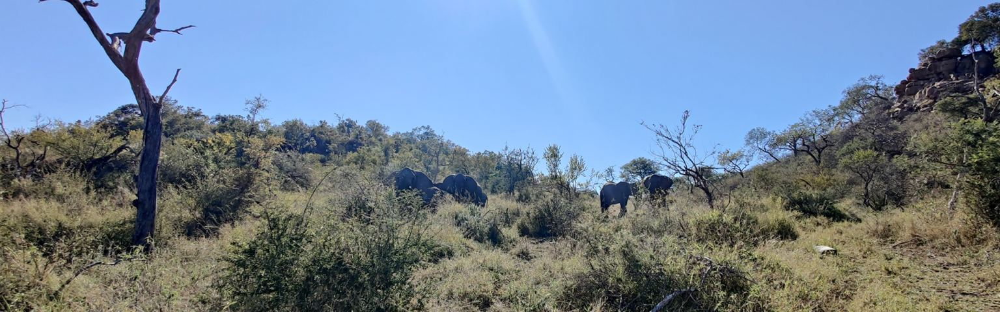
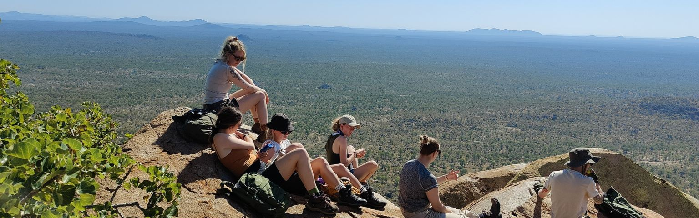
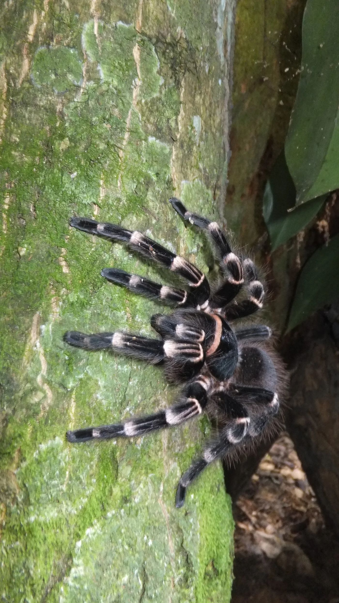
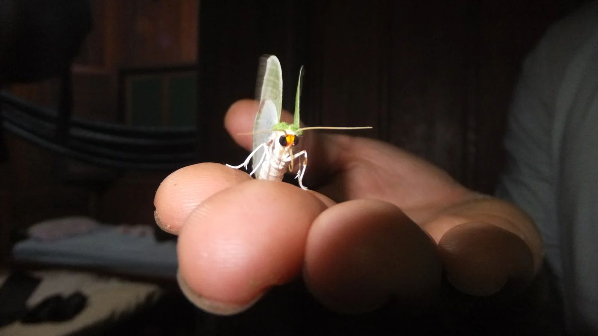

Our research is mainly focused on conservation biology, with a strong emphasis on soil ecology. Most of our current research projects are related to the evolutionary ecology, phylogenetics, and conservation genetics/genomics of invertebrates.
We use earthworms and some of their allies to tease apart the factors that influence the soil’s black box. From ecosystem functioning to the molecular basis of an individual species’ function (including gut-associated microbiota), these are all taken as underlying components supporting the whole ecological system, its resilience, and, ultimately, its sustainability.
In addition, we are interested in how human disturbance, biogeography, and non-native animals have and will continue to affect the evolutionary processes that generate and sustain biological diversity.
Most of our projects involve the use of molecular tools, next-generation sequencing, and cellular biology alongside field-based research to assess biodiversity across scales.
One of our latest research projects focuses on the study of soil biodiversity in historical anthropogenic ecosystems, and the role of humans as niche constructors.
We are also interested in using the genetics of commensal animals as proxies to track and infer ancient human migrations/dynamics across South America.
In the field




